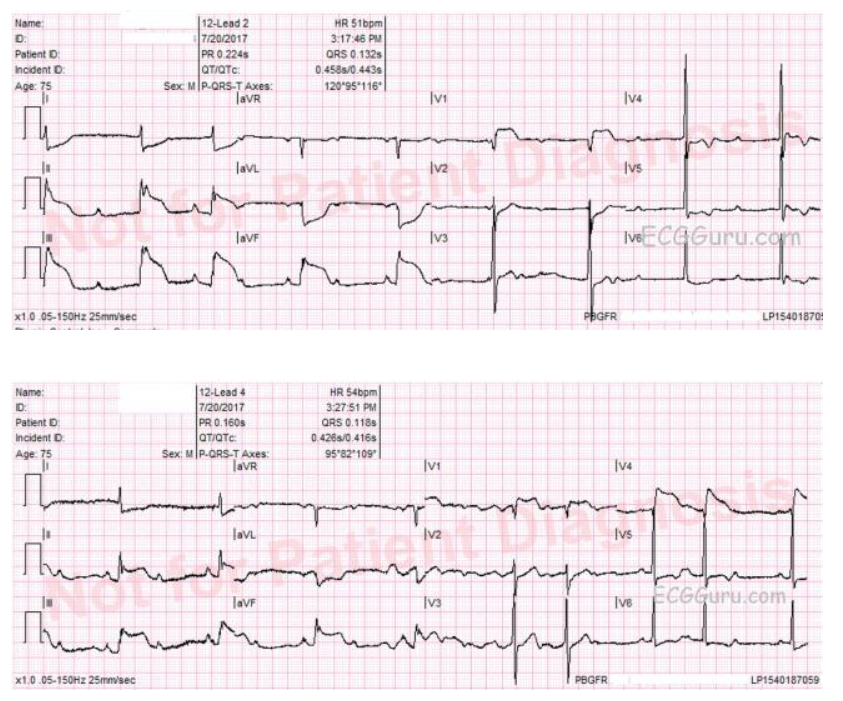
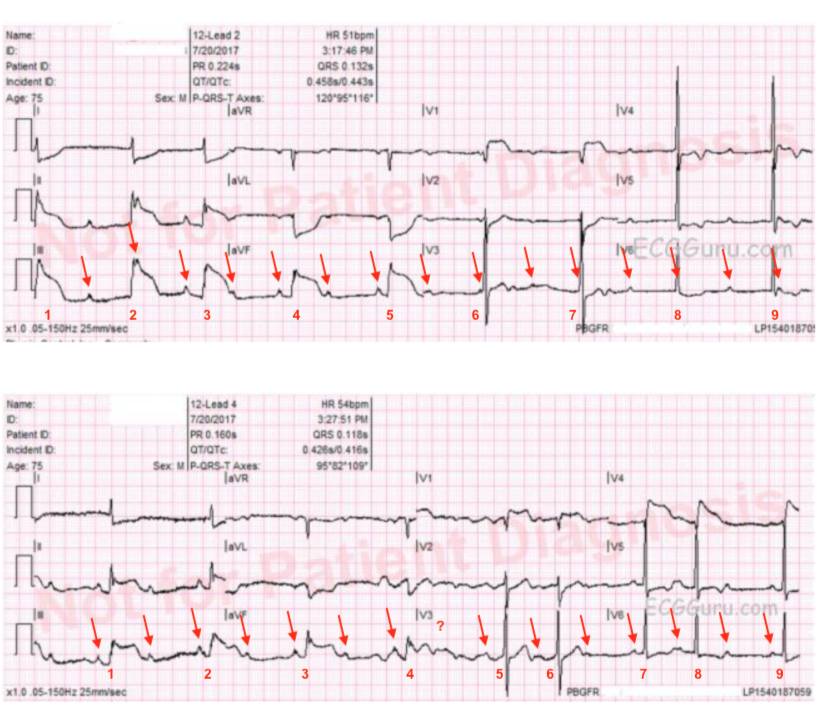

Ôn tập đọc điện tâm đồ – Số 143 (ECG Guru - Dawn Altman - Dr. Stephen Smith)
Một trong những lý do khiến tôi giảm tần suất đăng bài trên ECG Blog của chính mình — là trong vài năm qua tôi đã tích cực bình luận trên trang ECG Guru của Dawn Altman — cũng như trên nhiều bài điện tâm đồ tuyệt vời do Dr. Steven Smith đăng trên trang blog vô cùng xuất sắc của ông.
Với những ai mong muốn có thêm nguồn bình luận điện tâm đồ chi tiết — tôi gợi ý các bạn xem:
- Bộ sưu tập điện tâm đồ dành cho giảng viên (Instructors’ Collection) trên trang ECG Guru của Dawn.
- Bất kỳ ca lâm sàng tuyệt vời nào được đăng trên ECG Blog của Dr. Smith.
Tôi đính kèm bên dưới đường link tới một số bài viết trước đây của tôi trên cả hai trang này, nơi tôi đã để lại bình luận chi tiết. Với bất kỳ ai thực sự “đam mê” đọc điện tâm đồ/rối loạn nhịp — đọc qua các bài này hẳn sẽ khiến bạn bận rộn trong một thời gian dài. Chúc bạn đọc vui!
-------------------------------------------
LƯU Ý (10/26/2020) — Để xem phiên bản CẬP NHẬT có ĐƯỜNG LINK tới tất cả bình luận của tôi trên Dr. Smith's ECG Blog và trên trang ECG Guru — Vui lòng TÌM biểu tượng ở cột bên phải của bất kỳ trang nào trên trang web này !!!
-------------------------------------------
Lưu ý: Bên dưới là hình từ điện tâm đồ mới nhất trong Instructors’Collection của Dawn. Tôi đã thêm nhãn của mình ở Hình-1. Bình luận chi tiết của tôi bổ sung cho phần diễn giải ban đầu của Dawn. Chúc bạn đọc vui!


-------------------------------------------


-------------------------------------------
Các Bình Luận của Tôi trên ECG Guru:
- Một số bình luận chọn lọc của tôi trên ECG Guru ...
- LBBB kèm LVH gần như chắc chắn — Bình luận #441 -
- Tắc cấp nhánh chéo thứ 1 hoặc thứ 2 — Bình luận 664 -
- LBBB với một số dấu hiệu thú vị — Bình luận #860 -
- Vẽ giản đồ bậc thang (laddergram) — Bình luận #861 - #877 -
- Mobitz I hay Mobitz II (RBBB) — Bình luận #862 -
- Khả năng 99+% là VT — Bình luận #866 -
- SVT đều không có sóng P xoang (180/phút) — Bình luận #867 -
- Bệnh lý thân chung (LMain) vs Tắc (Dùng aVR) — Bình luận #876 -
- Tắc cấp RCA/Wenckebach ngược dòng — Bình luận #878 -
- AFib kèm blốc AV hoàn toàn — hay Có phải? — Bình luận #879 -
- LVH nhưng Không có bệnh sử — và Còn gì khác? — Bình luận #880 -
- Mobitz 2 với dẫn truyền AV 3:1 (+ RBBB/LAHB) — Bình luận #884
- AFlutter với đáp ứng thất thay đổi — Bình luận #888
- Nhịp đôi nhĩ hay điều gì khác? (Wenckebach SA) — Bình luận #973
- THỬ THÁCH: AFib hay Nhịp xoang kèm PAC? — Bình luận #1006
- Đâu là chỗ ST "kết thúc" và T "bắt đầu" — Bình luận #1010
- AFib nhanh: Ảnh hưởng lên cung lượng tim ... — Bình luận #1011
- MI thành trước với đặc điểm thú vị (? Wellens) — Bình luận #1012
- Ôn tập GIẢN ĐỒ BẬC THANG: các yếu tố rối loạn nhịp cơ bản — Bình luận #1018
- Một Điện tâm đồ "Gần Như bình thường" (Thế nào là "bình thường"? ) — Bình luận #1021
- AFlutter kèm PVC hay nhát dẫn truyền lệch hướng? — Bình luận #1025
- Thay đổi điện tâm đồ của tăng kali máu (K+ huyết thanh = 7.4) — Bình luận #1026
- Blốc AV hoàn toàn ở mức nút AV — Bình luận #1033
- Vài điểm tinh tế về LAHB / RBBB — Bình luận #1034
- RBBB kèm một số thay đổi kín đáo-nhưng-có thật — Bình luận #1056
- Blốc SA — hay Có lẽ Không? — Bình luận #1058
- MI ST chênh lên do Động mạch "thủ phạm" nào? — Bình luận #1068
- LVH — Phân mảnh và Tăng gánh vs Thiếu máu cục bộ — Bình luận #1072
- MI thành dưới cấp + nhịp chậm (động mạch thủ phạm) — Bình luận #1074
- AVRT ở trẻ 13 tuổi có WPW (RP' dài ) — Bình luận #1075
- Đau ngực & sóng T đảo ngược khổng lồ — Bình luận #1081
- Bệnh nhân có mang máy tạo nhịp? — Bình luận #1086
- Tạo nhịp bắt giả (máy tạo nhịp qua da) — Bình luận #1091
- STEMI cấp thành dưới-sau (Nghiệm pháp "soi gương" dương tính) — Bình luận #1093
- Có điều gì cấp tính không? (bất thường ST-T kín đáo) — Bình luận #1095
- AFib và MI trước-vách kèm một nhát đến sớm — Bình luận #1096
- PAC với mức độ dẫn truyền lệch hướng thay đổi — Bình luận #1099
- Đánh giá một số khía cạnh kỹ thuật của điện tâm đồ — Bình luận #1102
- Mobitz I kèm đường dẫn truyền kép trong nút AV — Bình luận #1104
- Nhịp chậm và các khoảng ngưng xoang ở nam 59 tuổi — Bình luận #1106
- Nghi tắc nhánh chéo thứ 1 — Bình luận #1107
- MI thành trước diện rộng sau biến cố — Bình luận #1108
- Nguyên nhân của giãn rộng QRS cực độ — Bình luận #1178
- Cách tôi dùng một điện tâm đồ bình thường để giảng dạy — Bình luận #1183
- Sóng T khổng lồ chưa rõ nguyên nhân — Bình luận #1186
- Bệnh nhân 42 tuổi có NSVT và khoảng PR kéo dài — Bình luận #1187
- WCT đều với hình dạng QRS không điển hình — Bình luận #1189
- STEMI cấp: 10 phút tạo nên khác biệt lớn thế nào — Bình luận #1198
- IVCD, thay đổi ST, Torsades và nhiều nữa! — Bình luận #1199
- "Aunt Minnie" với một chỉ số cao & một chỉ số thấp (điện giải, thận) — Bình luận #1298
- WCT đều với hình dạng LBBB — Bình luận #1302
- Thiếu máu cục bộ trên điện tâm đồ: cách tiếp cận hệ thống — Bình luận #1303
- Điện tâm đồ thứ 6 trong một loạt (đau ngực mới ở nam 87 tuổi) — Bình luận #1305
- Viêm màng ngoài tim cấp (không phải MI cấp ) — Bình luận #1316
- Blốc AV không theo quy luật ... — Bình luận #1321
- Chẩn đoán phân biệt SVT đều — Bình luận #1326
- Blốc AV hoàn toàn ở nữ 78 tuổi — Bình luận #1328
- Nhận biết rối loạn dẫn truyền liên quan tần số — Bình luận #1354
- Có blốc "ba phân nhánh" không? — Bình luận #1356
- Đây là Mobitz 1 hay Mobitz 2? —Bình luận #1357
- Tăng kali máu trên điện tâm đồ (mức vừa đến nặng ...) — Bình luận #1358
- Bản ghi có tạo nhịp cho thấy STEMI cấp — Bình luận #1463
- Kiến thức cơ bản về BBB — Bình luận #1478
- Blốc AV mức độ cao vs blốc AV độ 2 Mobitz II — Bình luận #1483
- Một điện tâm đồ đáng lo ngại không có bệnh sử ... — Bình luận #1511
- Có bao nhiêu dấu hiệu của STEMI thành trước? — Bình luận #1512
- Sóng T nhọn ở một vài chuyển đạo ... — Bình luận #1605
- Vì sao bệnh nhân này ngừng tim? — Bình luận #1606
- Một hình ảnh điện tâm đồ cần ghi nhớ (Brugada) — Bình luận #1608 -
- Kích hoạt báo động STEMI là đúng dù QRS rộng — Bình luận #1609 -
- Tôi đã bất ngờ với kết quả thông tim — Bình luận #1621 -
- MI dưới-sau-bên cấp + RBBB — Bình luận #1664 -
- RBBB, LAA, điện tâm đồ đọc bằng máy tính — và NHIỀU HƠN NỮA! — Bình luận 1796 -
- MI RV cấp (kèm STEMI thành dưới và blốc AV) — Bình luận #1800 -
- Đây có thật là blốc AV mức độ cao? — Bình luận #1809 -
- Phụ nữ lớn tuổi mắc bệnh cơ tim Takotsubo — Bình luận #1824 -
- Tạo nhịp nhĩ + RBBB + STEMI cấp — Bình luận #1919 -
- Hãy nhớ 2 bước trong đọc điện tâm đồ — Bình luận 1926 -
- Trông như STEMI/thông tim bình thường (cầu cơ tim?) — Bình luận 1934 -
- Vì sao bệnh nhân này tử vong? (QTc là bao nhiêu? ) — Bình luận 1946 -
- Nhịp nhĩ thấp vs nhịp bộ nối ở bệnh nhân 86 tuổi (T nhọn) — Bình luận 1949 -
- Nhiều câu hỏi hơn câu trả lời (MI thành trước/PVC) — Bình luận 1954 -
- RBBB phân mảnh — nhưng không có gì cấp tính — Bình luận 1956 -
- RBBB phân mảnh ở nữ bệnh nhân nhiễm khuẩn huyết — Bình luận 1958 -
- Vài suy nghĩ về một điện tâm đồ NHI KHOA — Bình luận 1959 -
- Nam 55 tuổi bị ngất + nhịp nhanh — Bình luận 1961 -
- STEMI cấp + AFib + còn gì nữa? — Bình luận 1963 -
- Loạn nhịp xoang ở một bệnh nhân — Bình luận 1966 -
- Blốc hai vs blốc ba phân nhánh (một thuật ngữ thực sự?) — Bình luận 1967 -
- Trước hết kiểm tra K+ huyết thanh — SAU ĐÓ mới nghĩ tới IVCD — Bình luận 1976 -
- Có điều gì không ổn — nhưng tôi không biết là gì! — Bình luận 1983 -
- Một nhịp kỳ quặc/sóng T nhọn & RBBB+ ở V1 — Bình luận 1986 -
- Có thể khu trú thiếu máu cục bộ trên điện tâm đồ không? (Trả lời của tôi) — Bình luận 1992 -
- Rất nhiều dấu hiệu để bàn/không có bệnh sử — Bình luận 1993 -
- Tắc cấp LAD đoạn gần (STEMI-LAHB) — Bình luận 1994 -
- Sắp ngưng hoạt động thất (loạn nhịp chậm) — Bình luận 1997 -
- ST chênh lên "vây cá mập" — Bình luận 2003 -
- Đây có phải LBBB không hoàn toàn? (MI cấp? ) — Bình luận 2005 -
- XXX — XXX
-------------------------------------------
Các Bình luận của tôi trên Blog của Dr. Steve Smith:
- Thay đổi kín đáo trong MI thành dưới cấp — 7 tháng 1, 2012
- Động mạch nào? — RCA vs LAD? (Nhồi máu RV cấp) — 14 tháng 11, 2014
- Sóng T tuổi thiếu niên tồn tại dai dẳng (Khi nào là bình thường?) — 7 tháng 1, 2015 -
- Siêu âm tim trước điện tâm đồ khi đau ngực — 28 tháng 1, 2015 -
- Không phải Brugada ở V1,V2 — mà là tăng kali máu! — 9 tháng 8, 2015 -
- Biến dạng phần cuối QRS vs tái cực sớm (ở V2,V3) — 6 tháng 10, 2015 -
- LVH kèm ST chênh lên thành trước (vs STEMI thành trước?) — 29 tháng 12, 2015 -
- Đau ngực & cúm (STEMI vs Viêm cơ tim khu trú) — 18 tháng 3, 2016 -
- Tắc cấp LAD đoạn gần (RBBB/LAHB- Lambda) — 21 tháng 3, 2016 -
- Một Điện tâm đồ đặc trưng bệnh (QT dài, T nhọn — Ca++) — 24 tháng 3, 2016 -
- Tắc cấp thân chung (LMain) (nhận biết trên điện tâm đồ) — 26 tháng 3, 2016 -
- STEMI cấp dù đang tạo nhịp vĩnh viễn — 2 tháng 4, 2016 -
- Điểm then chốt hồi sinh / LCx vs RCA "thủ phạm" — 17 tháng 4, 2016 -
- Sóng T giống DeWinter — KHÔNG được bỏ sót! — 20 tháng 4, 2016 -
- 10 Ví dụ để KIỂM TRA khả năng nhận biết (sóng T thành trước) — 23 tháng 4, 2016 -
- 10 Ví dụ về sóng T tối cấp thành dưới — 1 tháng 5, 2016 -
- Phân biệt trên điện tâm đồ giữa PE cấp vs RVH mạn — 27 tháng 5, 2016 -
- Nhát hỗn hợp, nhát bắt được: "2 cái sai có thể thành một cái đúng" — 3 tháng 6, 2016 -
- RBBB và ST chênh lên (STEMI mới vs phình vách LV) — 6 tháng 6, 2016 -
- Sóng T tối cấp thành dưới hay thay đổi ST soi gương — 10 tháng 6, 2016 -
- STEMI thành trước vs tái cực sớm lành tính? — 17 tháng 6, 2016 -
- Máy tính bỏ sót WPW (về hiệu ứng đàn xếp (concertina)) — 20 tháng 6, 2016 -
- Biến dạng phần cuối QRS kèm tắc cấp LAD — 24 tháng 6, 2016 -
- STEMI thành dưới cấp — hay có phải? — 1 tháng 7, 2016 -
- STEMI thành trước cấp, hình yên ngựa, tái cực sớm? — 8 tháng 7, 2016 -
- ST chênh lên lồi không do STEMI — 14 tháng 7, 2016 -
- WCT ở trẻ 12 tuổi — 20 tháng 7, 2016 -
- ST chênh lên ở V1,V2 — MI RV, Brugada hay tăng K ? — 24 tháng 7, 2016 -
- Blốc hai vs ba phân nhánh / thay đổi cấp? — 30 tháng 7, 2016 -
- Tính tương xứng giữa ST-T và QRS (STEMI thành trước ) — 5 tháng 8, 2016 -
- Đây là Brugada-1 hay hình yên ngựa? (ngất) — 10 tháng 8, 2016 -
- VT hai chiều vs AVNRT kèm RBBB luân phiên? — 25 tháng 8, 2016 -
- RVH vs RBBB vs cả hai? — PE cấp? (RV lớn trên siêu âm tim) — 1 tháng 9, 2016 -
- Tắc LCx kín đáo hay không? — 4 tháng 9, 2016 -
- Tắc LAD vs tái cực sớm (PVC xen kẽ) — 18 tháng 10, 2016 -
- Sóng T đảo ngược ở chuyển đạo trước tim phải (lành tính) — 5 tháng 12, 2016 -
- Phân bố ST chênh lên thay đổi (co thắt) — 7 tháng 12, 2016 -
- Máy tính đọc là bất thường "không đặc hiệu" — 10 tháng 12, 2016 -
- Định dạng Cabrera ở 50mm/giây (một bệnh nhân đau ngực) — 29 tháng 12, 2016 -
- LVH kèm ST chênh xuống rõ rệt + đau ngực — 6 tháng 1, 2017 -
- Nhịp nhanh QRS rộng kèm tím tái (VT vs SVT ...) — 10 tháng 1, 2017 -
- LBBB, đau ngực và thay đổi ST-T đang tiến triển — 20 tháng 1, 2017 -
- SVT rất nhanh ở trẻ em (tần số ~220/phút) — 22 tháng 1, 2017 -
- Quá liều cocaine và hình ảnh điện tâm đồ Brugada — 25 tháng 1, 2017 -
- Nhịp theo nhóm & tăng kali máu (kiểu hình giống Brugada (Brugada phenocopy)) — 27 tháng 1, 2017 -
- Vai trò của điện tâm đồ trong DKA nặng (sóng U) — 2 tháng 2, 2017 -
- MI thành dưới, LVH hay cả hai? (một bệnh nhân đau ngực) — 5 tháng 2, 2017 -
- ST chênh lên, troponin âm tính nhưng KHÔNG phải tái cực sớm! — 10 tháng 2, 2017 -
- Vận dụng tinh tế tiêu chuẩn Smith-Sgarbossa khi có LBBB — 20 tháng 2, 2017 -
- WCT không ổn định đáp ứng kém với sốc điện chuyển nhịp — 23 tháng 2, 2017 -
- Nam 40 tuổi đau ngực và sóng ST-T "kỳ lạ" — 1 tháng 3, 2017 -
- Thêm một nam 40 tuổi bị đau ngực ("chủ đề" lặp lại ) — 3 tháng 3, 2017 -
- Tắc LAD sắp xảy ra (nhận biết Wellens kín đáo) — 9 tháng 3, 2017 -
- Kết quả đọc bằng máy tính có bỏ sót STEMI cấp không? — 10 tháng 3, 2017 -
- — Bài liên quan: EMS 12-Lead (về việc phân loại điện tâm đồ tại khoa cấp cứu) — 11 tháng 3, 2017 -
- VT vs SVT kèm dẫn truyền lệch hướng ở bệnh nhân 20 tuổi bị DKA - 17 tháng 3, 2017 -
- T nhọn và "giả nhồi máu" do mất nước - 19 tháng 3, 2017 -
- Dẫn truyền lệch hướng do blốc phân nhánh luân phiên (và LSFB! ) - 31 tháng 3, 2017 -
- RBBB với ST chênh lên thoáng qua (Nhịp gì?) - 2 tháng 4, 2017 -
- MI thành trước cấp hay mới xảy ra vs phình vách LV? - 21 tháng 4, 2017 -
- Bé gái 16 tuổi bị quá liều thuốc: LBBB vs WPW? - 23 tháng 4, 2017 -
- Nữ 40 tuổi bị đau ngực (các dấu hiệu kín đáo THEN CHỐT! ) - 27 tháng 4, 2017 -
- Hình ảnh giả nhồi máu do LVH vs Wellens? - 3 tháng 5, 2017 -
- ST chênh lên ở V1,V2 ở bệnh nhân có LVH - 6 tháng 5, 2017 -
- TQRSD (biến dạng phần cuối QRS) - 13 tháng 5, 2017 -
- Bệnh nhân lọc máu bị nhịp chậm ... - 18 tháng 5, 2017 -
- STEMI cấp trên bản ghi có tạo nhịp sau phẫu thuật - 19 tháng 5, 2017 -
- "Bận rộn ở khu phân loại" (dấu hiệu LCx kín đáo nhưng có thật ... ) - 26 tháng 5, 2017 -
- Đau ngực, trào ngược dạ dày-thực quản và thay đổi sóng ST-T kín đáo - 29 tháng 5, 2017 -
- ST chênh lên kèm thay đổi soi gương do ? (MI vs K+?) - 1 tháng 6, 2017 -
- Sóng T nhọn ở bệnh nhân 35 tuổi bị DKA/còn gì khác? - 17 tháng 6, 2017 -
- Sóng T nhọn ở bệnh nhân 20 tuổi. Còn gì khác? - 21 tháng 6, 2017 -
- Phù phổi trên siêu âm tim + LVH thú vị trên điện tâm đồ - 7 tháng 7, 2017 -
- Thay đổi điện tâm đồ kín đáo ở bệnh nhân 82 tuổi bị ngất - 12 tháng 7, 2017 -
- Máy tính nói "AFib". Bạn có đồng ý không? - 11 tháng 8, 2017 -
- Tác dụng của adenosine lên nhịp này? (AFlutter? ) - 23 tháng 8, 2017 -
- Có nên tiêu sợi huyết sau 15 giờ đau ngực? - 1 tháng 9, 2017 -
- Sóng T DeWinter / AIVR - 24 tháng 9, 2017 -
- Nữ 30 tuổi đau ngực. Điện tâm đồ của cô ấy có bình thường không? - 30 tháng 9, 2017 -
- VT hay nhịp trên thất kèm LBBB? - 14 tháng 10, 2017 -
- Ngất ở nam cao tuổi ( ? Wellens ? ) - 25 tháng 10, 2017 -
- Đau ngực nhưng điện tâm đồ không chẩn đoán được ... - 1 tháng 11, 2017 -
- Làm sao thuyết phục bác sĩ tim mạch ??? - 6 tháng 11, 2017 -
- Đau ngực & một "điện tâm đồ bình thường" theo kết quả máy tính - 10 tháng 11, 2017 -
- Bệnh nhân 50 tuổi bị đau ngực (Khái niệm "các tình trạng cạnh tranh") - 15 tháng 11, 2017 -
- Bệnh nhân 30 tuổi đau ngực và điện tâm đồ này (S1Q3T3; IRBBB,ST) - 22 tháng 11, 2017 -
- Về khoảng QTc (Dùng quy tắc ước lượng nhanh cho QTc) - 24 tháng 11, 2017 -
- RBBB, tắc mạch bị bỏ sót trên điện tâm đồ, nhịp là gì? - 25 tháng 11, 2017 -
- Bất thường kín đáo ở bệnh nhân 54 tuổi đau ngực - 27 tháng 11, 2017 -
- Điện tâm đồ sau ngừng tim (MI cấp hay điều gì khác?) - 30 tháng 11, 2017 -
- Vì sao ST chênh xuống thành dưới? Nhịp là gì? - 1 tháng 12, 2017 -
- Bệnh nhân 30 tuổi bị tăng áp phổi và điện tâm đồ này - 13 tháng 12, 2017 -
- Một nhịp QRS rộng khó (bệnh nhân ngất) - 16 tháng 12, 2017 -
- Sóng ST-T Wellens hay điều gì khác? - 18 tháng 12, 2017 -
- Bản ghi nối tiếp nói lên tất cả (hiệu ứng triệt tiêu) - 23 tháng 12, 2017 -
- Không phải "STEMI", nhưng KHÔNG bình thường! (Ed Burns, LITFL) - 27 tháng 12, 2017 -
- Dấu hiệu kín đáo ở bệnh nhân đau ngực - 29 tháng 12, 2017 -
- Chẳng có gì kín đáo ở đây cả ... Đúng không? - 2 tháng 1, 2018 -
- MI cấp hay điều gì khác? - 5 tháng 1, 2018 -
- ST chênh lên: STEMI vs tái cực sớm vs viêm màng ngoài tim? - 8 tháng 1, 2018 -
- Vận dụng biến dạng phần cuối QRS (STEMI cấp- AIVR) - 11 tháng 1, 2018 -
- Đau ngực và ST chênh lên (MI thành dưới cũ? Viêm màng ngoài tim?) - 17 tháng 1, 2018 -
- Biến thể tái cực? LVH? và/hoặc STEMI cấp? - 24 tháng 1, 2018 -
- STEMI? Cần thông tim cấp? — hay không? - 26 tháng 1, 2018 -
- Tầm quan trọng của bản ghi so sánh (kín đáo! ) - 28 tháng 1, 2018 -
- Nhiễu ở bệnh nhân lọc máu (không phải ST-T tối cấp ! ) - 30 tháng 1, 2018 -
- Thay đổi kín đáo ở bệnh nhân đau ngực (nhưng không còn nghi ngờ! ) - 1 tháng 2, 2018 -
- Tắc LCx cấp dù điện tâm đồ không chẩn đoán được! — 5 tháng 2, 2018 -
- Chấn thương tim — giờ ST chênh lên (về Viêm màng ngoài tim) — 7 tháng 2, 2018 -
- LBBB + đau ngực — Có tắc động mạch vành cấp không? - 11 tháng 2, 2018 -
- Bất thường kín đáo (ở chuyển đạo III, T đảo ngược ở aVL) - 15 tháng 2, 2018 -
- Nhiệt độ là bao nhiêu? (của một phụ nữ không đáp ứng) - 19 tháng 2, 2018 -
- Sóng ST-T tối cấp trong STEMI đang tiến triển - 22 tháng 2, 2018 -
- RBBB với thay đổi thiếu máu cục bộ kín đáo ... - 24 tháng 2, 2018 -
- ST chênh xuống lan tỏa + ST chênh lên ở aVR - 28 tháng 2, 2018 -
- ST chênh lên thành trước: Kích hoạt hay không? - 5 tháng 3, 2018 -
- Cai rượu + QTc rất dài - 8 tháng 3, 2018 -
- Co giật + khoảng QTc hơi dài - 9 tháng 3, 2018 -
- Một hình ảnh cần nhận ra! ( = PE cấp! ) - 12 tháng 3, 2018 -
- Định nghĩa lại tiêu chuẩn LBBB? STEMI cấp? - 14 tháng 3, 2018 -
- Không phải Wellens, mà V1,V2 đặt quá cao trên ngực - 16 tháng 3, 2018 -
- STEMI vs viêm màng ngoài tim/tái cực sớm - 14 tháng 5, 2011/18 tháng 3, 2018 -
- SVT & hoạt động nhĩ ngược dòng (AVNRT vs AVRT?) - 20 tháng 3, 2018 -
- Bạn đã có 2 giờ để cứu bệnh nhân này (STEMI bị bỏ sót ) - 24 tháng 3, 2018 -
- Câu chuyện về 2 STEMI- từng bước một (kết quả máy tính) - 27 tháng 3, 2018 -
- KHÔNG phải OMI dù sóng S thành trước RẤT LỚN! (Tuyệt vời! ) - 4 tháng 4, 2018 -
- Nhịp nhanh QRS rộng đều do tăng kali máu! - 6 tháng 4, 2018 -
- ST chênh lên + cường giáp + LVH + tái cực - 9 tháng 4, 2018 -
- Sóng U đảo ngược — ý nghĩa lâm sàng ... - 14 tháng 4, 2018 -
- RBBB kèm tăng kali máu — Còn gì khác? - 16 tháng 4, 2018 -
- Giả bình thường hóa các thay đổi sóng ST-T và QRS - 20 tháng 4, 2018 -
- Tăng kali máu kín đáo qua dấu hiệu điện tâm đồ nối tiếp ... - 22 tháng 4, 2018 -
- ST chênh lên đơn độc ở aVL (co thắt mạch vành) - 23 tháng 4, 2018 -
- Ngừng tim / ST chênh lên "vây cá mập" (Ý kiến của tôi về ETT ) - 25 tháng 4, 2018 -
- Sóng T (U) bất thường ở người nghiện rượu - 4 tháng 5, 2018 -
- VT phân nhánh vs VT vào lại bó nhánh - 8 tháng 5, 2018 -
- Phân ly AV ở nam thanh niên (blốc AV? ) - 11 tháng 5, 2018 -
- STEMI thành sau đơn độc (nghiệm pháp soi gương - LCx) - 19 tháng 5, 2018 -
- Ngừng tim và điện tâm đồ 12 chuyển đạo bất thường (RVH/LVH) - 24 tháng 5, 2018 -
- MI thành sau cấp dù có RBBB (chuyển đạo thành sau: không) - 26 tháng 5, 2018 -
- DANH SÁCH: QT/QU dài + sóng U (thuốc/điện giải/thần kinh trung ương) - 27 tháng 5, 2018 -
- Điện tâm đồ có tạo nhịp + thay đổi sóng ST-T nguyên phát! (MI cấp) - 29 tháng 5, 2018 -
- Đăng lại nhịp WCT năm 2015 này: QRS có thực sự rộng??? - 30 tháng 5, 2018 -
- LBBB kèm đảo điện cực LA-LL + thay đổi ST kín đáo - 4 tháng 6, 2018 -
- Nhịp chậm, QRS rộng, T nhọn, tụt huyết áp (nhiễu) - 6 tháng 6, 2018 -
- QRS có thực sự rộng đến vậy? (vây cá mập) - 11 tháng 6, 2018 -
- STEMI thành dưới vs viêm màng ngoài tim co thắt (dấu hiệu Schamroth) - 17 tháng 6, 2018 -
- WPW hay AIVR? Vì sao AIVR? ( = nhịp chậm xoang ...) - 18 tháng 6, 2018 -
- Biến dạng phần cuối QRS là gì (chẩn đoán viêm màng ngoài tim là mạo hiểm) - 20 tháng 6, 2018 -
- LBBB, Sgarbossa cải biên, thay đổi ST-T định tính - 22 tháng 6, 2018 -
- Điện tâm đồ này có giúp xử trí quá liều insulin không? (K+ thấp) - 24 tháng 6, 2018 -
- Tái cực sớm vs OMI vs viêm màng ngoài tim (AFib/nhịp theo nhóm) - 26 tháng 6, 2018 -
- Hội chứng Wellens + thay đổi trên các bản ghi nối tiếp! - 28 tháng 6, 2018 -
- MI típ 1 với thông tim bình thường (MI thành bên cao đơn độc) - 1 tháng 7, 2018 -
- Dùng biến dạng phần cuối QRS để đưa ra chẩn đoán! - 3 tháng 7, 2018 -
- AFib chậm hơn dự kiến + ngất (về SSS!) - 5 tháng 7, 2018 -
- Khi nào lẽ ra phải chẩn đoán OMI? - 8 tháng 7, 2018 -
- OMI thành dưới cấp + MI RV (ST-T tối cấp / hình soi gương) - 11 tháng 7, 2018 -
- — Cũng như — sóng J do thiếu máu cục bộ (Bình luận ngày 11 tháng 7 của tôi)
- OMI thành bên cao cấp (chỉ thấy ở aVL) - 13 tháng 7, 2018 -
- Nhận biết LQTS (hội chứng QT dài) trên điện tâm đồ - 17 tháng 7, 2018 -
- Chẹn kênh natri trên điện tâm đồ (QTc dài) - 20 tháng 7, 2018 -
- Dấu hiệu điện tâm đồ của hạ kali máu — và — Còn gì khác? - 22 tháng 7, 2018 -
- Dấu hiệu điện tâm đồ của tăng kali máu (tháp Eiffel/tiêu cơ vân) - 24 tháng 7, 2018 -
- Có ST chênh lên không? (PE cấp/chuyển đạo ghi đồng thời) - 26 tháng 7, 2018 -
- Nhận biết OMI kín đáo của nhân viên cấp cứu (đặt sai vị trí V1,2) - 28 tháng 7, 2018 -
- Đặt sai vị trí điện cực chi và điện cực ngực (nhận biết!) - 29 tháng 7, 2018 -
- Đau ngực ở nữ 30 tuổi (bất thường kín đáo ở 11/12 chuyển đạo/so sánh) - 31 tháng 7, 2018 -
- SVT đều — Làm sao chẩn đoán AFlutter? - 3 tháng 8, 2018 -
- WCT đều với hình ảnh giống LBBB ... - 5 tháng 8, 2018 -
- Trẻ 13 tuổi khó thở (WPW - rối loạn nhịp - định vị) - 7 tháng 8, 2018 -
- ST chênh lên nhiều: tái cực vs STEMI? ("hình soi gương") - 9 tháng 8, 2018 -
- Tắc cấp thân chung (LMain)! — và một bản ghi đầu tiên kín đáo ... - 30 tháng 8, 2018 -
- 2 ca tắc mạch (Đọc điện tâm đồ tốt và kém tốt hơn ... ) - 2 tháng 9, 2018 -
- Takotsubo đảo ngược và một điện tâm đồ bất thường - 4 tháng 9, 2018 -
- OMI sau-bên kín đáo (LCx) + VT kèm phân ly AV/nhát bắt được - 7 tháng 9, 2018 -
- Nữ 50 tuổi đau ngực & các bản ghi phân loại "bình thường" - 11 tháng 9, 2018 -
- PE cấp (dấu hiệu điện tâm đồ & siêu âm tim) - 12 tháng 9, 2018 -
- VT vô căn — VT phân nhánh (xem bình luận của tôi) - 14 tháng 9, 2018 -
- Thay đổi điện tâm đồ nối tiếp kín đáo ở bệnh nhân 30 tuổi đau ngực - 15 tháng 9, 2018 -
- Sóng T tối cấp (Câu hỏi đặt ra đã sai) - 20 tháng 9, 2018 -
- AFlutter kèm STEMI thành trước kín đáo (Hãy dùng compa đo! ) - 24 tháng 9, 2018 -
- Định dạng Cabrera - tốc độ 50mm/giây - đau ngực ... - 26 tháng 9, 2018 -
- Bệnh nhân lọc máu — sóng ST-T "giả bình thường hóa" - 29 tháng 9, 2018 -
- Sóng T khổng lồ / Nguồn gốc của nhịp nhĩ - 1 tháng 10, 2018 -
- Điện tâm đồ có tạo nhịp kèm STEMI thành trước cấp (Sgarbossa) - 3 tháng 10, 2018 -
- STEMI thành bên cao cấp kín đáo (aVL-hình soi gương) - 6 tháng 10, 2018 -
- STEMI cấp được chẩn đoán CHỈ dựa vào hình dạng PVC - 8 tháng 10, 2018 -
- Thêm một nghiên cứu không có giá trị về điện tâm đồ phân loại tại khoa cấp cứu - 9 tháng 10, 2018 -
- OMI kín đáo trên điện tâm đồ phân loại (PR vs TP làm đường nền) - 14 tháng 10, 2018 -
- MI thành trước + PVC (nhịp kín đáo - thoát bộ nối) - 19 tháng 10, 2018 -
- Nam 80 tuổi đột ngột PEA (không có "thủ phạm" rõ trên điện tâm đồ) - 22 tháng 10, 2018 -
- Troponin bình thường & tắc cấp (sóng J do thiếu máu cục bộ) - 24 tháng 10, 2018 -
- ST chênh lên thành dưới nhưng không có MI! (ST thẳng đuỗn- một ST "bình thường") - 27 tháng 10, 2018 -
- ST chênh xuống lan tỏa/ST chênh lên ở aVR (Hãy nhận ra hình ảnh này! ) - 31 tháng 10, 2018 -
- Sóng Q ở V1,V2 = MI vách? (hay đặt sai vị trí V1/V2?) - 4 tháng 11, 2018 -
- Nhận biết QTc dài (Đánh giá QTc- DANH SÁCH ) - 7 tháng 11, 2018 -
- Nghiên cứu dựa trên ca bệnh về trục trặc máy tạo nhịp (nhịp chậm) - 9 tháng 11, 2018 -
- 2 điện tâm đồ nhắn tin cho Dr. Meyers (STEMI cấp hay không?) - 12 tháng 11, 2018 -
- Thay đổi điện tâm đồ nối tiếp qua 10 bản ghi trong STEMI cấp - 15 tháng 11, 2018 -
- Sóng T tối cấp - LAHB mới + sóng Q thành dưới = OMI - 18 tháng 11, 2018 -
- RBBB + đau ngực: mới vs cũ? - 21 tháng 11, 2018 -
- STEMI cấp bị bỏ sót bởi máy tính - 21 tháng 11, 2018 -
- Đây có phải sóng T tối cấp? (máy tính nói là STEMI) - 24 tháng 11, 2018 -
- SVT đều 200/phút + STEMI cấp? (Ngữ nghĩa) - 26 tháng 11, 2018 -
- ST chênh lên ở V1,V2 — STEMI? Brugada-2? (hay do điện cực?) - 28 tháng 11, 2018 -
- Sốc, LVH và/hoặc thiếu máu cục bộ dưới nội tâm mạc lan tỏa - 30 tháng 11, 2018 -
- 2 điện tâm đồ không có bệnh sử: thay đổi cấp hay không? - 5 tháng 12, 2018 -
- Không phải nhịp đôi — mà là vấn đề về K+ & Ca++ (DKA) - 11 tháng 12, 2018 -
- Đây có thể là hội chứng Wellens không kèm nhồi máu? - 14 tháng 12, 2018 -
- WCT đều: VT vs AFlutter + ngộ độc flecainide? - 16 tháng 12, 2018 -
- Máy tính gọi đây là bình thường (STEMI kín đáo ) - 19 tháng 12, 2018 -
- Thay đổi sóng ST-T kín đáo (đoạn ST bình thường vs dẹt) - 24 tháng 12, 2018 -
- ST chênh lên ở V1-3: MI thành trước vs tăng gánh (chẩn đoán LVH trên điện tâm đồ) - 27 tháng 12, 2018 -
- ST chênh lên ở V3: Có bình thường không? (Thêm về chẩn đoán trên điện tâm đồ LVH) - 29 tháng 12, 2018 -
- Sóng T lành tính? Bệnh cơ tim phì đại? - 2 tháng 1, 2019 -
- "Thủ phạm là ai? = tăng kali máu + hạ calci máu - 3 tháng 1, 2019 - 7 tháng 1 -
- Thay đổi sóng ST-T động học (viêm cơ tim, LVH) - 9 tháng 1, 2019 -
- MI RV đơn độc + sóng T nhọn thiếu máu cục bộ bất thường - 11 tháng 1, 2019 -
- Nhịp chậm & blốc AV do tăng K (Điểm then chốt về nhịp) - 13 tháng 1, 2019 -
- WCT đều: VT vs SVT kèm dẫn truyền lệch hướng? - 24 tháng 1, 2019 -
- Nhịp bộ nối vs nhịp nhĩ thấp? (P âm hay một phần của QRS?) - 28 tháng 1, 2019 -
- Tăng thân nhiệt và ST chênh lên ở V1,V2 (Brugada-1) - 30 tháng 1, 2019 -
- ST chênh xuống lan tỏa/ST chênh lên ở aVR không do bệnh mạch vành (K+ thấp) - 2 tháng 2, 2019 -
- Chẩn đoán OMI kín đáo nhờ so sánh điện tâm đồ (troponin dương tính) - 5 tháng 2, 2019 -
- Suy tim phải và SVT (Vì sao đây là AFlutter?) - 9 tháng 2, 2019 -
- RVH - IRBBB: T đảo ngược thành trước là mới hay cũ? - 12 tháng 2, 2019 -
- Bạn sẽ chờ bao lâu để OMI trở thành STEMI? - 16 tháng 2, 2019 -
- ST chênh lên dạng vòm ở chuyển đạo ngực: cấp hay không? - 18 tháng 2, 2019 -
- Ngừng tim, ROSC và giờ RBBB? (rất rộng! ) - 28 tháng 2, 2019 -
- LVH, ST chênh xuống lan tỏa/ST chênh lên ở aVR (hồng cầu hình liềm ) - 2 tháng 3, 2019 -
- Chuyển đạo monitor để đánh giá ST chênh lên? (Cài đặt bộ lọc! ) - 4 tháng 3, 2019 -
- Nhận biết ST chênh lên bất thường ở V1,V2 - 6 tháng 3, 2019 -
- MI cấp kín đáo (Phức bộ A hay B ở aVL là đúng?) - 8 tháng 3, 2019 -
- Suy hô hấp + điện tâm đồ "bình thường" theo máy tính ("mặt cười" ) - 11 tháng 3, 2019 -
- Nhịp gì đây? (2 WCT đều vs 1 nhịp?) - 13 tháng 3, 2019 -
- HÌNH DẠNG ở chuyển đạo V2 — OMI cấp - 15 tháng 3, 2019 -
- OMI cấp được chẩn đoán nhờ siêu âm speckle (một IVCD bất thường) - 18 tháng 3, 2019 -
- Điện giải — điện tâm đồ đặc trưng bệnh (hạ Ca/tăng K) - 19 tháng 3, 2019 -
- Thoát bộ nối (giản đồ bậc thang)/thiếu máu cục bộ dưới nội tâm mạc - 26 tháng 3, 2019 -
- OMI thành bên cao kín đáo + 3 dương tính giả (ST chênh lên ở aVL) - 29 tháng 3, 2019 -
- 3 điện tâm đồ gửi Dr. Meyers (Có kích hoạt phòng thông tim? ) - 31 tháng 3, 2019 -
- Tắc LAD cấp ở bệnh nhân cao tuổi - 3 tháng 4, 2019 -
- Dấu hiệu điện tâm đồ & chẩn đoán lâm sàng PE cấp - 5 tháng 4, 2019 -
- Bệnh nhân đau bụng và LBBB (dương tính + về định tính ) - 7 tháng 4, 2019 -
- OMI cấp bị bỏ sót vì nó không phải "STEMI" - 12 tháng 4, 2019 -
- MI típ 2 + cầu cơ tim + nhịp nhanh/ST chênh lên - 15 tháng 4, 2019 -
- Viêm màng ngoài tim cấp hay điện tâm đồ biến thể tái cực? - 19 tháng 4, 2019 -
- OMI dù không có STEMI ( + đặt sai vị trí điện cực V2) - 20 tháng 4, 2019 -
- Đau ngực & ST chênh xuống chỉ ở chuyển đạo I và aVL ... - 22 tháng 4, 2019 -
- Nhịp WCT với các nhát rộng-hẹp xen kẽ - 23 tháng 4, 2019 -
- Chẩn đoán STEMI cấp dù là bản ghi có tạo nhịp - 25 tháng 4, 2019 -
- Biến dạng phần cuối QRS (T-QRS-D) - điện thế LVH - 27 tháng 4, 2019 -
- LBBB vs WPW (tiêu chuẩn LBBB- tất cả về WPW) - 30 tháng 4, 2019 -
- Rối loạn nhịp nhanh: Dùng monitor vs điện tâm đồ 12 chuyển đạo - 1 tháng 5, 2019 -
- Sóng T De Winter (đặc điểm điển hình & không điển hình) - 2 tháng 5, 2019 -
- Hình ảnh điện tâm đồ Brugada vs STEMI thành trước cấp - 6 tháng 5, 2019 -
- Đừng bỏ qua OMI này (Hãy có hệ thống/dùng máy tính) - 7 tháng 5, 2019 -
- Thêm một OMI thành trước/không phải tái cực (hình ảnh trực quan) - 11 tháng 5, 2019 -
- Đau ngực ở bệnh nhân có nhịp tạo nhịp (ATach 2:1?) - 13 tháng 5, 2019 -
- Sóng T nhọn dù K+ huyết thanh = 2.4 mEq/L - 15 tháng 5, 2019 -
- LVH và/hoặc OMI cấp (soi kỹ từng chi tiết các bản ghi nối tiếp/LVH) - 19 tháng 5, 2019 -
- LBBB: nhận biết OMI cấp (Smith-Mod-Sgarbossa) - 24 tháng 5, 2019 -
- OMI thành trước cấp (Bác sĩ tim mạch sẽ làm gì vào lần sau?) - 26 tháng 5, 2019 -
- Một điện tâm đồ phức tạp và không có thông tin lâm sàng (Giản đồ bậc thang) - 28 tháng 5, 2019 -
- Thay đổi chồng lên STEMI trước-bên cũ? - 2 tháng 6, 2019 -
- Bác sĩ tim mạch & máy tính đều nói "bình thường" (OMI cấp) - 4 tháng 6, 2019 -
- HÌNH DẠNG sóng ST-T có bình thường không? (Kích hoạt phòng thông tim? ) - 7 tháng 6, 2019 -
- Làm sao để không bỏ sót WPW (ôn lại cách tiếp cận của tôi) - 8 tháng 6, 2019 -
- Sóng T tối cấp (đang giảm dần) - Máy tính - 9 tháng 6, 2019 -
- Bệnh nhân 20 tuổi bị đau ngực: tái cực sớm hay điều gì khác?- 11 tháng 6, 2019 -
- Bệnh nhân khó thở (Hệ thống-LVH-QTc-tăng K+) - 15 tháng 6, 2019 -
- Công thức 3 và 4-biến của Dr. Smith (STEMI thành trước? ) - 17 tháng 6, 2019 -
- Biến thể tái cực vs LVH-HCM-STEMI? (người da đen) - 20 tháng 6, 2019 -
- ST chênh lên dạng "mặt cười" (Vận dụng khái niệm này! ) - 22 tháng 6, 2019 -
- Thay đổi sóng ST-T ở chuyển đạo thành dưới rất kín đáo - 23 tháng 6, 2019 -
- Nhận biết nhanh tình trạng tắc cấp LAD đoạn gần - 26 tháng 6, 2019 -
- Cần một hệ thống để phát hiện mọi dấu hiệu! (OMI thành dưới ) - 28 tháng 6, 2019 -
- 2 ca RBBB (Cách tiếp cận của tôi để chẩn đoán BBB trên điện tâm đồ) - 1 tháng 7, 2019 -
- Đau ngực khởi phát 24-48 giờ trước (2 MI cũ- đối chiếu với bệnh sử) - 5 tháng 7, 2019 -
- OMI LAD cấp kín đáo-nhưng-chắc chắn (nhiễu! ) - 11 tháng 7, 2019 -
- ST chênh lên chỉ ở V6/soi gương ở V1 (LCx-MI thành sau ) - 15 tháng 7, 2019 -
- Nhân đôi kích thước phức bộ giúp chẩn đoán OMI! - 17 tháng 7, 2019 -
- OMI LAD kín đáo: mới hay cũ? (giống Brugada) - 19 tháng 7, 2019 -
- Viêm cơ tim cấp vs OMI vs tái cực (các bản ghi nối tiếp) - 21 tháng 7, 2019 -
- Điện tâm đồ đúng; chụp mạch vành thì không! - 13 tháng 8, 2019 -
- 5 bác sĩ tim mạch nói không STEMI — Có phải là OMI? - 15 tháng 8, 2019 -
- Đau ngực ở bệnh nhân 50 tuổi với điện tâm đồ "bình thường" — Hay là OMI? - 18 tháng 8, 2019 -
- Bằng chứng OMI cấp trên bản ghi máy tạo nhịp này? - 20 tháng 8, 2019 -
- Đây có phải sóng T tối cấp? - 26 tháng 8, 2019 -
- Hội chứng QTc ngắn vs sóng T do tăng kali máu - 2 tháng 9, 2019 -
- Bạn nhận ra điện tâm đồ này? (tăng K- kiểu hình giống Brugada) - 8 tháng 9, 2019 -
- Thiếu máu cục bộ trên điện tâm đồ không do tim (+ vài câu hỏi) - 12 tháng 9, 2019 -
- Diễn tiến troponin: MI thành trước mới vs phình vách LV? - 17 tháng 9, 2019 -
- Khi QRS rộng — điểm J sẽ ẩn mình! (VSD) - 20 tháng 9, 2019 -
- Vì sao nhát "A" và "B" trông khác nhau đến vậy? (nhiễu) - 22 tháng 9, 2019 -
- ST chênh lên 7 mm với LBBB = cấp? Còn gì khác? - 25 tháng 9, 2019 -
- Chẩn đoán MI cấp nhờ CT ngực (+ điện tâm đồ kín đáo/nhiễu) - 27 tháng 9, 2019 -
- OMI thành dưới kín đáo / MAT ở tần số bình thường - 30 tháng 9, 2019 -
- ST chênh xuống ở bệnh nhân 30 tuổi (sóng tái cực nhĩ/nhịp nhanh) - 2 tháng 10, 2019 -
- Hình dạng vây cá mập (Đừng quên tìm sóng P! ) - 4 tháng 10, 2019 -
- Tương tác giữa MI cũ và MI RV cấp! - 9 tháng 10, 2019 -
- Bạn có hiểu các sóng T đảo ngược này không? - 10 tháng 10, 2019 -
- SVT đều (AVRT — bệnh nhân 30 tuổi có WPW — xử trí) - 16 tháng 10, 2019 -
- OMI dưới-bên cấp (QS ở chuyển đạo dưới-R cao ở V1-MI thầm lặng ) - 20 tháng 10, 2019 -
- Nguyên nhân ST chênh xuống (ST "lõm như thìa"/digoxin/DANH SÁCH ) - 21 tháng 10, 2019 -
- SCAD (bóc tách động mạch vành tự phát) - nữ 30 tuổi - 24 tháng 10, 2019 -
- Hãy xem tất cả điện tâm đồ làm nối tiếp! (manh mối kín đáo! ) - 1 tháng 11, 2019 -
- Thiếu máu cục bộ dưới nội tâm mạc lan tỏa (không phải lúc nào cũng do tim! ) - 3 tháng 11, 2019 -
- AFib do cường phế vị ở bệnh nhân 30 tuổi (TẦN SỐ của AFib - chẩn đoán phân biệt) - 5 tháng 11, 2019 -
- Thay đổi kín đáo = một điện tâm đồ không chẩn đoán được về OMI (tiêu sợi huyết?) - 8 tháng 11, 2019 -
- Đây là SVT gì @ 150/phút? (AFlutter — BÀI CỦA TÔI ) - 12 tháng 11, 2019 -
- Biến thể tái cực vs OMI cấp (T-QRS-D) - 14 tháng 11, 2019 -
- Co giật — Ôn tập về hạ kali máu - 18 tháng 11, 2019 -
- Đau ngực ở bệnh nhân 30 tuổi — OMI cấp? (điện tâm đồ nối tiếp) - 20 tháng 11, 2019 -
- Ngừng tim — vây cá mập/ sóng Osborn/ nhịp nhĩ thấp - 22 tháng 11, 2019 -
- Có ST chênh xuống toàn bộ? — hay cuồng nhĩ? - 26 tháng 11, 2019 -
- Viêm tụy cấp/LVH và tái cực vs OMI cấp? - 27 tháng 11, 2019 -
- Phân biệt MI mới vs cũ (vs MI chồng lên) - 29 tháng 11, 2019 -
- Nữ 30 tuổi có Brugada-1 do sốt? - 5 tháng 12, 2019 -
- Ngộ độc CO — Tắc LAD đoạn gần (T-QRS-D ) - 9 tháng 12, 2019 -
- Viêm cơ tim cấp vs tái cực vs OMI (điện tâm đồ nối tiếp) - 10 tháng 12, 2019 -
- VIÊM MÀNG NGOÀI TIM cấp (bàn luận chi tiết! ) - 13 tháng 12, 2019 -
- OMI cấp dù có LBBB (Smith-Sgarbossa- kín đáo! ) - 16 tháng 12, 2019 -
- Thêm về hạ kali máu - 18 tháng 12, 2019 -
- WCT đều (nhịp nhanh QRS rộng - Wide-Complex Tachycardia) - 23 tháng 12, 2019 -
- Đừng có bỏ qua AFlutter! (SVT đều ~150/phút) - 24 tháng 12, 2019 -
- Mobitz II ở bệnh nhân 80 tuổi không triệu chứng (blốc AV) - 1 tháng 1, 2020 -
- Hạ thân nhiệt kèm sóng Osborn! - 2 tháng 1, 2020 -
- MAT - kết quả máy tính - dẫn truyền lệch hướng (Ashman) - 5 tháng 1, 2020 -
- Dấu hiệu Crochetage — Có ASD không? - 8 tháng 1, 2020 -
- Viêm màng ngoài tim cấp (viêm cơ tim)? OMI cấp? Tái cực? - 10 tháng 1, 2020 -
- MI cấp + viêm màng ngoài tim sau nhồi máu (tổng quan) - 14 tháng 1, 2020 -
- Tắc cấp LMain (nhận biết trên điện tâm đồ) - 16 tháng 1, 2020 -
- OMI thành dưới cấp (nhịp phức tạp-giản đồ bậc thang-Mobitz I ) - 19 tháng 1, 2020 -
- RBBB + thay đổi ST-T 1° (nguyên phát)/AFib + blốc AV (SSS? ) - 22 tháng 1, 2020 -
- "Vây cá mập" / "choáng" cơ tim ==> điện thế thấp - 24 tháng 1, 2020 -
- Tăng kali máu (thoát thất - thay đổi điện tâm đồ) - 26 tháng 1, 2020 -
- Bệnh nhân khoảng 20 tuổi đau ngực (OMI LAD đoạn xa - kín đáo) - 29 tháng 1, 2020 -
- Tiền sử đặt stent kèm đau ngực (RBBB-phân mảnh) - 31 tháng 1, 2020 -
- 7 bản ghi: bản ghi nào trong 3 có OMI thành dưới cấp? - 2 tháng 2, 2020 -
- Tim mạch sẽ không thông tim bệnh nhân này! (OMI thành trước ) - 4 tháng 2, 2020 -
- ST chênh lên ở V1,V2 — do LVH (không phải ACS) - 6 tháng 2, 2020 -
- ST chênh lên ở aVR (tắc động mạch vành?/SVT? ) - tháng 2 XXX, 2020 - - -
- Thiếu máu cục bộ vs đặt sai vị trí điện cực (cách nhận biết) - 11 tháng 2, 2020 -
- Nam khoảng 50 tuổi "đau do đầy hơi" (tắc LAD giai đoạn sớm) - 14 tháng 2, 2020 -
- Hạ thân nhiệt — vây cá mập (Nguyên nhân gây viêm cơ tim) - 16 tháng 2, 2020 -
- Bệnh nhân 32 tuổi đau ngực — sóng T tối cấp BỊ BỎ SÓT - 18 tháng 2, 2020 -
- Đây là phức bộ rộng gì (phân ly AV- AIVR) - 20 tháng 2, 2020 -
- Nam khoảng 60 tuổi đau ngực (OMI kín đáo) - 2 tháng 3, 2020 -
- T đảo ngược thành trước (không phải Wellens- PE vs thiếu máu cục bộ) - 28 tháng 2, 2020 -
- Nhịp nhanh xoang với khoảng PR RẤT DÀI - 4 tháng 3, 2020 -
- ATach vs AVNRT thể nhanh-chậm - 6 tháng 3, 2020 -
- ST chênh lên ở aVR/ST chênh xuống lan tỏa (thông tim bình thường) - 9 tháng 3, 2020 -
- Một tình huống cần nhận ra (WCT không đều-AFib/WPW) - 12 tháng 3, 2020 -
- Ngừng tim/ECMO — vây cá mập (nhịp) - tháng 3 XXX, 2020 - - -
- Chẩn đoán phân biệt WCT đều - tháng 3 XXX, 2020 - - -
-------------------------------------------